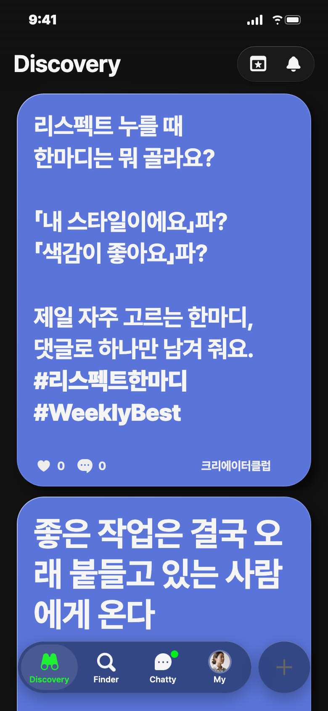
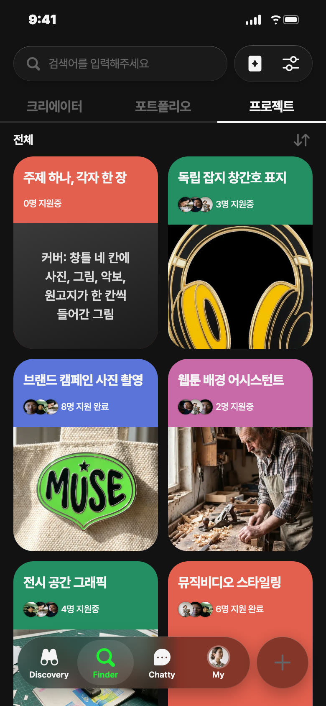
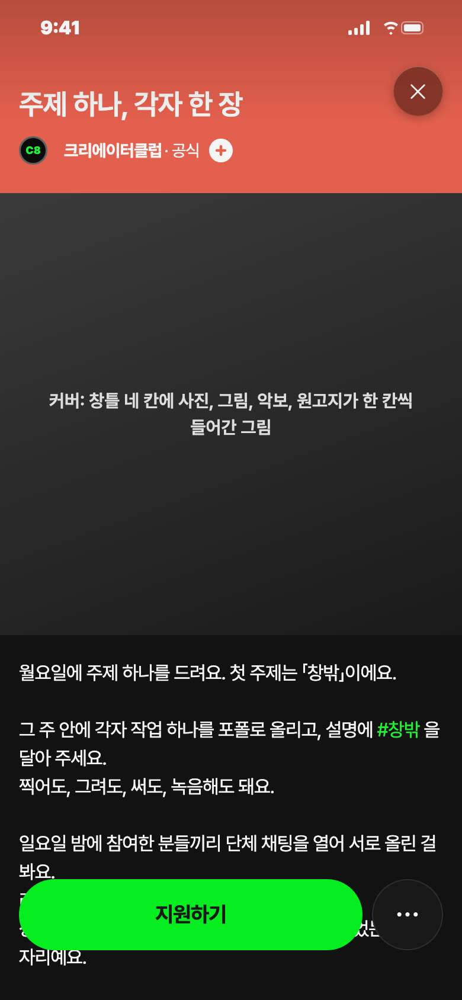
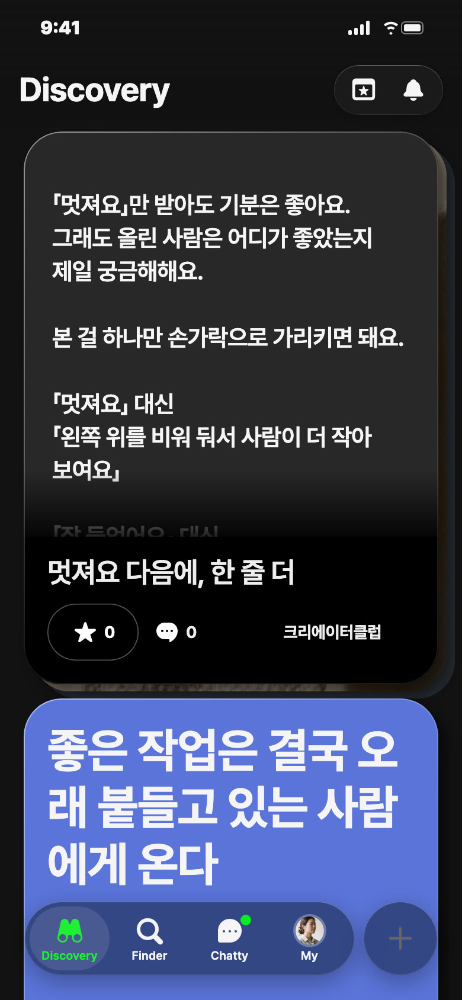
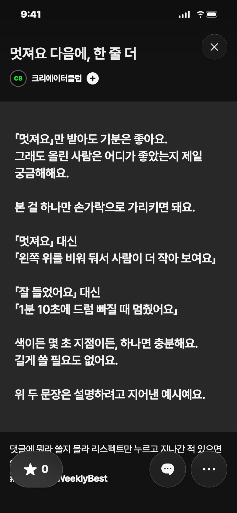

C8 앱 게시 시안 · 10/30(금) 정기 제안
오늘 올림 · 영감 · 낮 12시 30분 · 파랑

칸: 반응하기 × 질문
왜 오늘: 금요일은 쉬거나 하나만 올리는 날이에요. 로그에 이번 주 게시함이 없어 피드를 덮을 걱정이 없고, 지난 7일 한 번도 안 쓴 반응하기 칸이에요
보낼 사람: 같이 작업 구경하는 친구에게 「너는 뭐 눌러?」
받고 싶은 댓글: 「오래 보고 싶어요요. 사진은 휙 넘기기 아까워서」
영감 글
리스펙트 누를 때 한마디는 뭐 골라요? 「내 스타일이에요」파? 「색감이 좋아요」파? 제일 자주 고르는 한마디, 댓글로 하나만 남겨 줘요. #리스펙트한마디 #WeeklyBest
비축 · 프로젝트 · 코랄


칸: 만들기 × 놀이
왜 비축: 첫 주제, 주간, 단체 채팅 열 사람을 샐리가 정해야 올려요
보낼 사람: 혼자 작업하다 주제가 막힌 친구에게 「이번 주 이거 같이 하자」
받고 싶은 지원 채팅: 「사진이요. 퇴근 버스 창밖으로 찍어 볼게요」
제목
주제 하나, 각자 한 장
카테고리
전 분야
모집 내용
11/9(월)~11/15(일) 한 주 동안 주제 「창밖」으로 각자 작업 하나를 포폴로 올릴 분 · 분야는 상관없어요 · 지원 채팅에 하는 분야만 한 줄 · 일요일 밤 참여한 분들끼리 단체 채팅에서 서로 올린 걸 봐요 · 상품 없음
설명
월요일에 주제 하나를 드려요. 첫 주제는 「창밖」이에요. 그 주 안에 각자 작업 하나를 포폴로 올리고, 설명에 #창밖 을 달아 주세요. 찍어도, 그려도, 써도, 녹음해도 돼요. 일요일 밤에 참여한 분들끼리 단체 채팅을 열어 서로 올린 걸 봐요. 리스펙트를 서로 눌러 주자는 모임은 아니에요. 상품도 없어요. 같은 주제를 다른 손이 어떻게 풀었는지 보는 자리예요. 지원 채팅에는 하는 분야만 한 줄 적어 주세요.
비축 · 포트폴리오


칸: 반응하기 × 쓸모
왜 비축: 다음 화요일 C8 작업물 자리 후보예요(앞 후보 둘과 셋 중 하나)
보낼 사람: 리스펙트만 누르고 말 없는 친구에게 「너 이거 읽어」
받고 싶은 댓글: 「저도 '색감 좋아요' 대신 '노을이 벽까지 번진 게 좋아요'라고 남겨 봤어요」
제목
멋져요 다음에, 한 줄 더
긴 글 본문
「멋져요」만 받아도 기분은 좋아요. 그래도 올린 사람은 어디가 좋았는지 제일 궁금해해요. 본 걸 하나만 손가락으로 가리키면 돼요. 「멋져요」 대신 「왼쪽 위를 비워 둬서 사람이 더 작아 보여요」 「잘 들었어요」 대신 「1분 10초에 드럼 빠질 때 멈췄어요」 색이든 몇 초 지점이든, 하나면 충분해요. 길게 쓸 필요도 없어요. 위 두 문장은 설명하려고 지어낸 예시예요.
설명
댓글에 뭐라 쓸지 몰라 리스펙트만 누르고 지나간 적 있으면 읽어 주세요. #댓글한줄 #WeeklyBest